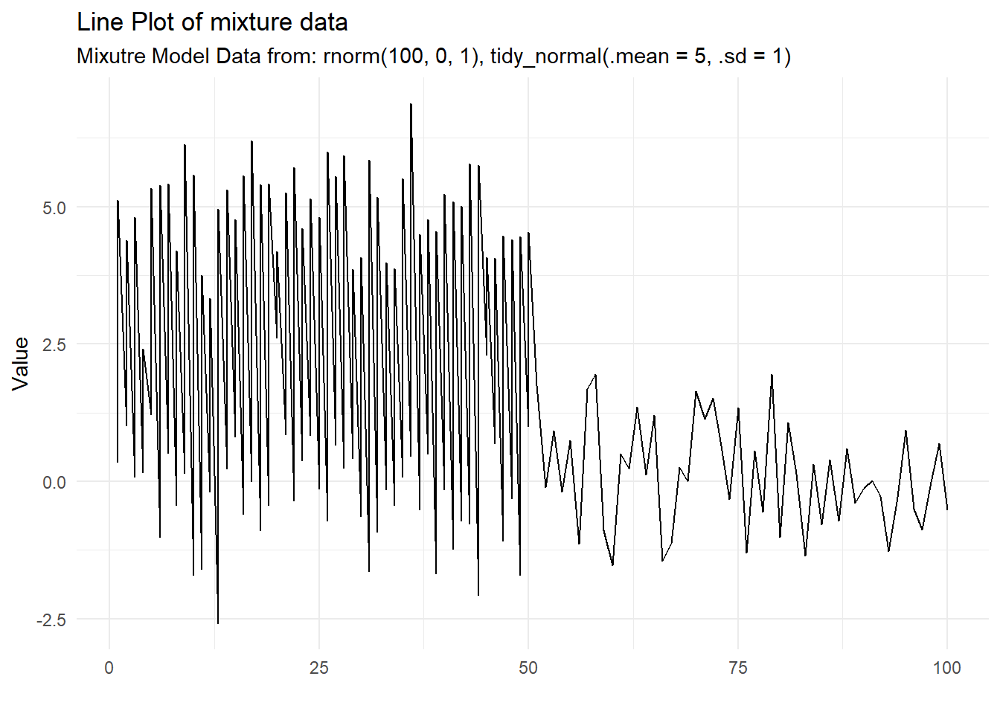
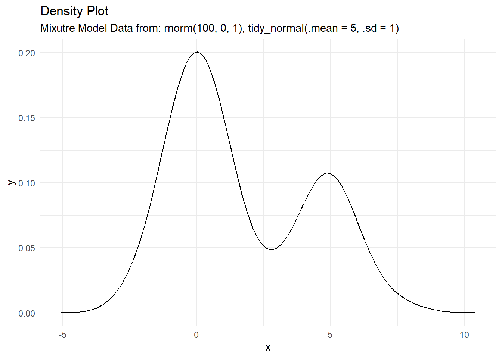

tidy_mixture_density(...)Introduction
A mixture distribution is a type of probability distribution that is created by combining two or more simpler distributions. This allows us to model complex data that may have multiple underlying patterns. For example, a mixture distribution could be used to model a dataset that includes both continuous and discrete variables.
To create a mixture distribution, we first need to specify the individual distributions that will be combined, as well as the weights that determine how much each distribution contributes to the overall mixture. Once we have these components, we can use them to calculate the probability of any given value occurring in the mixture distribution.
Mixture distributions can be useful in a variety of applications, such as data analysis and machine learning. In data analysis, they can be used to model data that is not well-described by a single distribution, and in machine learning, they can be used to improve the performance of predictive models. Overall, mixture distributions are a powerful tool for understanding and working with complex data.
Function
Let’s take a look a function in {TidyDensity} that allows us to do this. At this moment, weights are not a parameter to the function.
Now let’s take a look at the arguments that get supplied to the ... parameter.
...- The random data you want to pass. Example rnorm(50,0,1) or something like tidy_normal(.mean = 5, .sd = 1)
Example
Let’s take a look at an example.
library(TidyDensity)
output <- tidy_mixture_density(
rnorm(100, 0, 1),
tidy_normal(.mean = 5, .sd = 1)
)As you can see, you can enter a function that outputs a numeric vector or you can use a {TidyDensity} distribution function.
Let’s take a look at the outputs.
output$data$dist_tbl
# A tibble: 150 × 2
x y
<int> <dbl>
1 1 -0.414
2 2 -1.71
3 3 0.0649
4 4 -1.29
5 5 1.10
6 6 -1.05
7 7 -1.03
8 8 0.240
9 9 -1.74
10 10 -1.11
# … with 140 more rows
$dens_tbl
# A tibble: 150 × 2
x y
<dbl> <dbl>
1 -5.07 0.0000673
2 -4.96 0.0000995
3 -4.86 0.000146
4 -4.75 0.000210
5 -4.65 0.000298
6 -4.55 0.000419
7 -4.44 0.000580
8 -4.34 0.000795
9 -4.23 0.00107
10 -4.13 0.00143
# … with 140 more rows
$input_data
$input_data$`rnorm(100, 0, 1)`
[1] -0.413724684 -1.713241210 0.064884522 -1.294700636 1.101200984
[6] -1.052145537 -1.026304171 0.240148512 -1.735312261 -1.111756597
[11] 0.934815374 -1.193344039 0.277680141 -0.772765254 1.198075158
[16] -1.023423629 2.429257564 0.005518949 0.247189631 -0.541751562
[21] -0.878002904 0.614479090 0.426605492 0.429932329 0.258381433
[26] 1.766976860 0.529586303 0.810537985 -0.932377155 0.848221630
[31] 0.614507016 -0.290625552 1.018234002 -1.006261183 -0.081229200
[36] -2.015350727 -0.728166001 0.532916968 2.350449402 -0.195470182
[41] 1.755488715 0.772129591 -0.170407611 0.313769021 -0.571408822
[46] 1.938400413 -0.333362852 -0.128815933 0.049011653 0.820455490
[51] -2.530385223 1.672060469 -0.351974006 -0.463601566 -0.054490131
[56] -0.875745356 0.307462537 -0.882063439 0.221219201 1.112877303
[61] 0.472396753 -2.000131797 -0.735084539 -0.668480462 -0.495305118
[66] -0.419871474 -1.289095403 -0.419410666 0.774450992 -0.980887068
[71] -0.330665289 0.501687735 -0.741711948 0.101867511 0.819619331
[76] 1.029531814 -0.504575007 0.309680019 -2.243726370 -2.114453413
[81] 0.814711458 0.451404384 0.434866823 1.954343899 0.937530815
[86] -1.017654596 3.042186684 -0.377393991 0.336961894 0.781780507
[91] -0.560143829 1.193425077 0.186314549 -0.525387138 0.933395977
[96] 0.167007653 1.453235706 -0.825401405 -0.193702218 0.667681318
$input_data$`tidy_normal(.mean = 5, .sd = 1)`
# A tibble: 50 × 7
sim_number x y dx dy p q
<fct> <int> <dbl> <dbl> <dbl> <dbl> <dbl>
1 1 1 4.56 1.70 0.000283 0.331 4.56
2 1 2 3.39 1.85 0.00100 0.0534 3.39
3 1 3 4.16 1.99 0.00289 0.201 4.16
4 1 4 5.43 2.14 0.00683 0.665 5.43
5 1 5 5.03 2.28 0.0133 0.512 5.03
6 1 6 5.63 2.43 0.0215 0.736 5.63
7 1 7 4.40 2.58 0.0300 0.273 4.40
8 1 8 4.39 2.72 0.0378 0.270 4.39
9 1 9 4.72 2.87 0.0459 0.390 4.72
10 1 10 5.73 3.01 0.0568 0.767 5.73
# … with 40 more rowsAnd now the visuals that come with it.
output$plots$line_plot
$dens_plot
The function also lists the input functions as well.
output$input_fns[[1]]
rnorm(100, 0, 1)
[[2]]
tidy_normal(.mean = 5, .sd = 1)Voila!